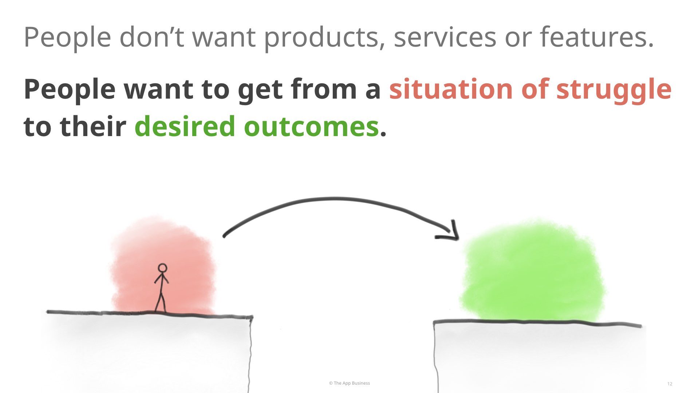
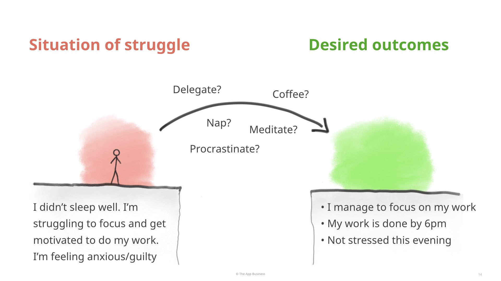

Today I want to talk to you about how to design things that people actually want – as opposed to designing things that people don't actually end up being bothered about.
It's about using a method called Jobs-to-be-Done.
Have you ever been in situations like these?
It's inevitable that some people won't understand or value user-centred design as user researchers or user-experience designers people would like them to.
And that's a good thing. We all have different priorities and different skills.
But I must admit, I used to feel quite afraid of situations like this. Because I didn't know how to handle them.
I think that it's actually on us – user researchers, designers and product managers – to articulate our process and thinking more clearly, so that we can bring other people along with us.
Jobs-to-be-Done is not a silver bullet that's going to replace all your other ways of thinking or methods. But it's very useful for communicating and articulating user-centred design, and bringing other people along with us.
And in a nutshell, Jobs-to-be-Done is a powerful way of thinking that puts people's real situations of struggle, and the outcomes that they're hoping for, at the centre of every conversation.
This is a lot better than having feature ideas or stakeholders' feature preferences at the centre of conversations.
If you're new to Jobs-to-be-Done, you could spend the next few weeks reading about it online, and you'll probably end up being quite confused.
There are broadly two ways of doing Jobs-to-be-Done. What I'm talking to you about today, is the original vision. The way that the creators defined it. Which I think is the most interesting and the newest. Everything else is also useful.
If you hear a client talk about Jobs-to-be-Done a bit like a Job-to-be-Done is a task, this is useful. But Jobs-to-be-Done, the way that Clay Christensen and Bob Moesta defined it, is different and more subtle than that.
My goal today is to take Jobs-to-be-Done, and translate into plain language, without any jargon, that you can use with your clients and colleagues. You won't even need to use the words "Jobs" or "Jobs-to-be-Done", because they confuse people.
I'm going to boil Jobs-to-be-Done down to 2 simple ideas, and 3 habits that you can use on your projects. And if you use these habits on your projects, you'll immediately notice a difference, without needing to ask your clients or colleagues to learn a new method or change the way they think.
The first idea of Jobs-to-be-Done is that, people don't actually want products, features or services. What people want, actually, is to get from a situation of struggle that they're in, to the outcomes that they're imagining.
Sometimes we are in situations of struggle: a situation where you might be stressed, or worried, or unhappy, dissatisfied, bored, ... You don't really like that situation. You want to get rid of these feelings.
And as you are into that situation, you're also imagining a different state of things, a different set of outcomes.
So, people experience situations of struggle, and as they do, they hope for different outcomes.
Products, services and features are just one possible way might help them go from that situation of struggle to the outcomes that they're hoping for.
But products, services or features are quite secondary. It's not the what matters the most. What is most real and most important to people, are the struggle and the difficult feelings that they're feeling, and the outcomes that they're hoping to achieve.
What people really want, is not your product, service or feature. What they really want is to get out of their situation of struggle, and closer to the outcomes they're hoping for.
For example, if you hear me say "I want coffee", it's not like I'm lying to you, but there's actually a lot more going on than I'm telling you.
My housemate plays video games late at night in the room just above me. So sometimes in the office, without having slept well. I struggle to focus and get motivated to do the work I'm supposed to be doing.
The more I procrastinate, the more anxious I feel, and the more guilty I feel.
When this happens, I really want to get rid of these feelings and this situation. And I'm hoping that I'll manage to focus on my work, and that my work will be done to good standards by 6pm, so that I don't have a stressful evening or another incomplete night of sleep.
These outcomes very important to me. These are the things that really matter to me.
I've used a few different products or strategies at different times when I've been in this situation of struggle:
It doesn't really matter to me which of these methods I pick. What I really want is to not be in that situation of struggle any more, not feel these difficult feelings, make progress towards these outcomes that I want.
So, people don't actually want products, services and features. What they really want instead is to get from a situation of struggle that they're feeling and experiencing to outcomes they're hoping to achieve.
That's the first idea of Jobs-to-be-Done.
The second idea of Jobs-to-be-Done is that focusing on feature ideas makes design hard.
Instead, if you focus on the situations of struggle that people are experiencing, and on the outcomes that they are hoping to achieve, then your design process is going to be way easier.
When you focus on situations of struggle and desired outcomes (as opposed to feature ideas) the design process at a high level is pretty simple.
It boils down to four simple questions:
These are the four questions I always have in my head when I design. It's pretty easy to communicate to clients, and very helpful to structure conversations.
Those are the two key ideas about Jobs-to-be-Done. There are lots of others, but these are the two key fundamental ones.
In Part 2, I will show you how to use Jobs-to-be-Done, by adopting three habits in your day-to-day work.